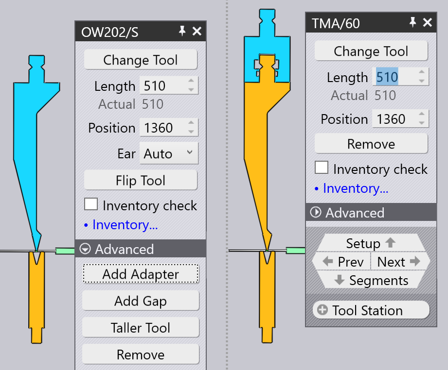

Edycja uchwytu narzędziowego
Po kliknięciu na uchwyt narzędziowy wyświetlany jest panel Mocowanie gięcia i służy on do edycji różnych ustawień mocowania gięcia i wykonywania różnych operacji.
Panel Mocowanie gięcia

Panel Mocowanie gięcia wygląda jak na ilustracji obok. Dokładne dostępne ustawienia i operacje będą się różnić w zależności od tego, czy klikasz na stempel, matrycę, czy mocowanie uchwytu. Ponadto niektóre ustawienia mogą być dostępne lub nie, w zależności od możliwości maszyny.
-
Kliknij przycisk Zmiana typu narzędzia, aby zastąpić narzędzie używane do wybranego mocowania za pomocą innego narzędzia. (Zobacz sekcję poniżej, aby uzyskać więcej informacji na temat pola wyboru narzędzi, który służy do wyboru narzędzia zastępczego).
-
Dane wejściowe Długość służą do regulacji długości stacji. Po wpisaniu tutaj nowej wartości, TecZone Bend ponownie utworzy stację za pomocą odpowiedniego zestawu segmentów, aby jak najdokładniej dopasować żądaną długość. Możesz wzrokowo sprawdzić używane segmenty, patrząc na linie granicy segmentu wyświetlane na mocowaniu gięcia.
-
Dane wejściowe Pozycja służą do ustawienia pozycji lewej krawędzi mocowania, wzdłuż stołu lub belki maszyny. Pozycję można również regulować, przeciągając uchwyt w lewo lub w prawo. (Patrz sekcja poniżej dotycząca przeciągania uchwytu).
-
Okno wyboru Dwuróg (wyświetlane tylko dla mocowań stempli) może być używane do wymuszania TecZone Bendużycia lewego i/lub prawegoear[1] elementy w grupie).
-
Obrót narzędzia służy do obracania narzędzia (od przodu do tyłu). Jest wyświetlany, gdy edytujesz mocowanie, które używa narzędzia asymetrycznego (takiego jak na przykład narzędzie wygięte). Operacja odwracania jest wystarczająco inteligentna, aby określić czy konieczne jest obrócenie dodatkowych uchwytów i narzędzi, aby zachować spójność. Przykładowo na poniższym obrazku odwrócenie stempla OW_Z4 (używanego do gięcia Z) również odwraca matrycę, uchwyt, a nawet detal, aby zachować spójność procesu:

-
Dodawanie adaptera służy do dodawania przedłużacza w celu zwiększenia wysokości stempla lub matrycy. Po dodaniu uchwytu zostanie on wybrany i wyświetli się dla niego panel (pozwala to na zmianę aktualnego uchwytu w trakcie użytkowania lub w celu jego usunięcia).
 -
Dodaj szczelinę służy do dodawania szczeliny w uchwycie narzędzia, aby umożliwić kołnierzowi przejście bez zderzenia (patrz sekcja poniżej Dodawanie odstępu, aby uzyskać więcej szczegółów na ten temat).
-
Duża wysokość narzędzia służy do zastąpienia wybranych narzędzi innymi wyższymi narzędziami z tej samej grupy.
-
Kliknij, Usuwanie aby zdjąć uchwyt narzędzia. Wyświetli się błąd braku stempla lub matrycy w nawigatorze gięcia dla gięć, które używają tej stacji. Można go naprawić za pomocą przycisku Dodaj na pasku poleceń po lewej i dodać nowy uchwyt.
-
Przełącznik Narzędzie pomiarowe służy do przełączania się między różnymi parami tarcz pomiarowych ACB, które mogą być używane do tej części. Wybór zależy od grubości blachy i używanego stempla.
-
Jeśli pole wyboru Kontrola ilości jest zaznaczone, używane segmenty są sprawdzane pod kątem dostępnej zawartości magazynu (którą można edytować, klikając w link Zarządzanie narzędziami…). Jeśli używane są segmenty, których nie ma w magazynie, rysowany jest na nich specjalny symbol trójlistny, jak widać na poniższym obrazku, dla elementów 40 mm i 45 mm w pobliżu środka stempla poniżej:

Podczas edycji mocowania narzędzia za pomocą któregokolwiek z tych ustawień i operacji TecZone Bend natychmiast zatwierdza status wszystkich operacji gięcia, wykonując różne kontrole, np. zderzeń, użyteczności narzędzi itp. Status nawigatora gięcia jest natychmiast aktualizowany w czasie rzeczywistym, co bardzo ułatwia eksperymentowanie z różnymi ustawieniami przy natychmiastowych i dokładnych informacjach zwrotnych.
Okno Zastąp narzędzie
Po kliknięciu przycisku Zmiana typu narzędzia zostanie wyświetlone okno Zastąp narzędzie:

W tym oknie wyświetlane są wszystkie możliwe narzędzia zastępcze.
-
Użyj hierarchii po lewej stronie, aby zawęzić wybór – na przykład możesz wybrać wyświetlanie tylko narzędzi wygiętych, aby wybór był łatwiejszy.
-
Użyj pola wyboru Sortuj u góry, aby posortować narzędzia według nazwy, wysokości, promienia lub innych kryteriów (dokładny zestaw kryteriów sortowania zależy od tego, czy wymieniasz stempel, matrycę lub uchwyt mocujący).
-
Możesz wpisać nazwę narzędzia (lub nazwę skróconą) w polu Wyszukaj, aby szybko zawęzić listę. Wpisanie częściowej nazwy narzędzia również jest w porządku – przykładowo użycie OW200 będzie pasować do narzędzi OW200, OW200/S i OW200/K.
-
Użyj suwaka Skaluj, aby dostosować rozmiary obrazów narzędzi. Narzędzie, które jest obecnie stosowane ma niebieskie wypełnienie i gruby obrys. Jasnoniebieska kratka wskazuje inne narzędzia, które są używane w tej części.
-
Wyłącz pole wyboru Filtruj, aby mieć nieograniczony widok na wszystkie narzędzia (niezależnie od tego, czy są odpowiednie, czy nie). W tym widoku narzędzia, które nie są odpowiednie są wyszarzone, a przesunięcie myszy nad jednym z tych narzędzi wskazuje, dlaczego jest niedostępne do wyboru:

Przesuwając kursor myszy nad obrazami narzędzi, TecZone Bend_natychmiast_ ponownie oblicza wybrane narzędzie, montuje nowo wybrane narzędzie i można zobaczyć w czasie rzeczywistym, czy rozważane narzędzie spowoduje jakiekolwiek problemy kolizyjne (odpowiednie gięcia w nawigatorze gięcia natychmiast zapalą się na czerwono, jeśli występuje zderzenie). Ten podgląd w czasie rzeczywistym bardzo ułatwia eksperymentowanie z różnymi narzędziami do wyboru, aż znajdziesz takie, które pasuje.
Jeśli klikniesz na jedno z narzędzi, wybór zostanie dokonany, a nowe narzędzie zostanie zastosowane do detalu. Jeśli zamiast tego naciśnieszEsc, dokonane wybory podglądu zostaną cofnięte, a oryginalne narzędzie pozostaje niezmienione.
Nawigacja i wybór
Panel mocowania gięcia wyświetla różne przyciski w podrzędnych panelach nawigacji i wyboru.
-
Użyj przycisku nawigacji Mocowanie, aby przejść do edycji całej konfiguracji gięcia. Więcej informacji na ten temat można znaleźć na stronie edytora konfiguracji.
-
Użyj przycisków Wstecz i Dalej, aby przejść przez edycję różnych mocowań narzędzi w tej konfiguracji.
-
Użyj przycisku nawigacji Segmenty, aby przejść o jeden poziom w dół i edytować poszczególne segmenty składające się na to mocowanie. Poniższa sekcja na temat edycji segmentów mocowań narzędzi dostarcza więcej informacji na ten temat.
-
Użyj pola wyboru Stacja narzędziowa, aby wybrać wszystkie mocowania narzędzi składających się na tę stację. Spowoduje to wybranie wszystkich stempli, matryc i uchwytów, które są wyrównane z wybranym mocowaniem, dzięki czemu można je edytować lub przesuwać razem.
-
Użyj pola wyboru Takie samo narzędzie, aby wybrać inne mocowania narzędzi, które używają tego samego narzędzia. Jest to często przydatne przed operacją wymiany narzędzia; wybranie wszystkich stacji za pomocą określonego narzędzia poszerza dostępny wybór narzędzi zamiennych.[2]
Edycja wielu mocowań

Jeśli wybierzesz wiele mocowań za pomocą Shift+Klikając na wszystkich, można je edytować razem. Tylko ustawienia i operacje, które są wspólne dla wszystkich mocowań, są dostępne do edycji.
Pola takie jak Długość lub Pozycja są wyświetlane do edycji, tylko jeśli są takie same dla wszystkich mocowań.
Jeśli jest wiele stacji, przydatne jest wybranie wszystkich stempli lub wszystkich matryc przed wykonaniem operacji Zmień narzędzie. W tym przypadku wybór dostępnych narzędzi zastępczych jest większy (ponieważ nie ma niebezpieczeństwa różnej wysokości stempli i matryc, powodujących zderzenie).
Przeciąganie uchwytu narzędzia do gięcia

Dane wejściowe Pozycja mogą służyć do precyzyjnego ustawienia pozycji mocowania. Czasami łatwiej jest po prostu przeciągnąć mocowanie gięcia w nowe położenie. Aby to zrobić:
-
Kliknij mocowanie gięcia, aby je wybrać (wybierz wiele mocowań za pomocą Shift+Kliknij).
-
Kliknij i zacznij przeciągać w lewo / w prawo, aby przesunąć wybrane mocowanie.
Jak widać na powyższym obrazku, po przesunięciu kursora myszy nad wybranym mocowaniem wyświetlany jest grot strzałki, co oznacza, że możesz przeciągnąć wybrane mocowanie. Kiedy przeciągasz mocowanie, wskaźniki zatrzaskowe pozwalają łatwo wyrównać mocowanie z innymi istniejącymi mocowaniami.
Jeśli podniesiesz mocowanie w pobliżu jego lewej krawędzi, lewe krawędzie wszystkich uchwytów są wykorzystywane do przyciągania. Jeśli podniesiesz uchwyt na środku, to linia środkowa służy do przyciągania i tak dalej.
Zaawansowane operacje
Oto kilka bardziej zaawansowanych operacji w panelu edytora Mocowanie gięcia.
Edycja segmentów mocowań narzędzi
Kliknięcie przycisku nawigacyjnego Segmenty podczas edycji uchwytu narzędzia do gięcia otwiera panel Segment narzędzia, który wygląda jak na ilustracji obok.

-
Pole wyboru Narzędzie służy do zastąpienia wybranego segmentu narzędzia dłuższym lub krótszym narzędziem lub innym rodzajem narzędzia.
-
Przyciski < Przesunięcie i Przesunięcie > służą do przesunięcia wybranego segmentu w lewo lub w prawo w ramach układu. Nie zmienia to całkowitej długości układu, ale jest przydatne do przemieszczania czujnika pomiarowego na przykład w lewo lub w prawo, aby uniknąć otworów.
-
Przyciski Dodaj i Usuwanie służą do dodawania nowych segmentów do układu lub do usunięcia wybranego segmentu.
-
Przyciski nawigacyjne Wstecz i Dalej służą do nawigacji przez proces edycji różnych segmentów w mocowaniu gięcia. Jak widać na powyższym obrazku, edytowany segment narzędzia jest podświetlony na niebiesko.
-
Przycisk nawigacji Zbrojenie służy do poruszania się w górę o jeden poziom oraz edytowania raczej całego mocowania gięcia niż poszczególnych segmentów.
Dodanie szczeliny w mocowaniu
Czasami przydatne jest dodanie wąskiej szczeliny w mocowaniu narzędzia, zwykle w celu umożliwienia kołnierzowi przejścia przez niego bez zderzenia. Aby to zrobić, kliknij przycisk Dodaj szczelinę (który pojawia się, jeśli mocowanie narzędzia jest wystarczająco długie). W panelu otwiera się niewielkie pole z zestawem wzajemnie połączonych danych wejściowych do ustawiania lewego marginesu, prawego marginesu i rzeczywistej szczeliny. Jako że suma tych trzech wartości musi sumować się do długości mocowania narzędzia, edycja dwóch z nich automatycznie ustawi trzecią.
Poniższy rysunek pokazuje tę operację w toku. Mamy kołnierz, który zderza się ze stemplem, a my dostosowujemy lewy/prawy margines, aż proponowana szczelina zostanie wyrównana z miejscem, w którym kołnierz przecina się ze stemplem (widać proponowaną szczelinę
wyświetlaną jako dwie pomarańczowe linie zaznaczone na mocowaniu gięcia).

Po kliknięciu przycisku OK w tym panelu podrzędnym tworzona jest szczelina i można zobaczyć, że błąd zderzenia został rozwiązany:

| Podczas edycji stacji, która używa uchwytu stempla TecZone Bend pyta, czy szczelinę należy wprowadzać tylko dla stempla, czy zarówno dla stempla, jak i uchwytu. |
Korzystanie z uchwytu podwójnego V
Możliwe jest użycie podwójnego uchwytu V do zamontowania dwóch matryc obok siebie. Aby to zrobić ręcznie, użyj przycisku Dodawanie adaptera, aby dodać uchwyt do matrycy, a następnie użyć przycisku Zmiana typu narzędzia, aby zmienić uchwyt na uchwyt podwójny V. Teraz można dodać drugą matrycę do drugiego gniazda uchwytu podwójnego V za pomocą polecenia Dodaj z paska poleceń i wybierając mocowanie matrycy.
Gdy matryca jest zamontowana w jednym gnieździe uchwytu podwójnego V, możesz ją przesunąć do innego gniazda, klikając wyświetlony przycisk Zmiana osi I: